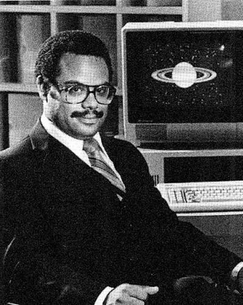

Bem-vindo ao nosso site!
Conheça a história de Mark Dean, um dos grandes nomes da história da computação.
Neste site você vai descobrir sua trajetória, suas invenções e suas contribuições para a tecnologia.
Quem foi Mark Dean?
Mark Dean é um engenheiro e cientista da computação norte-americano que participou do desenvolvimento do computador pessoal IBM PC.